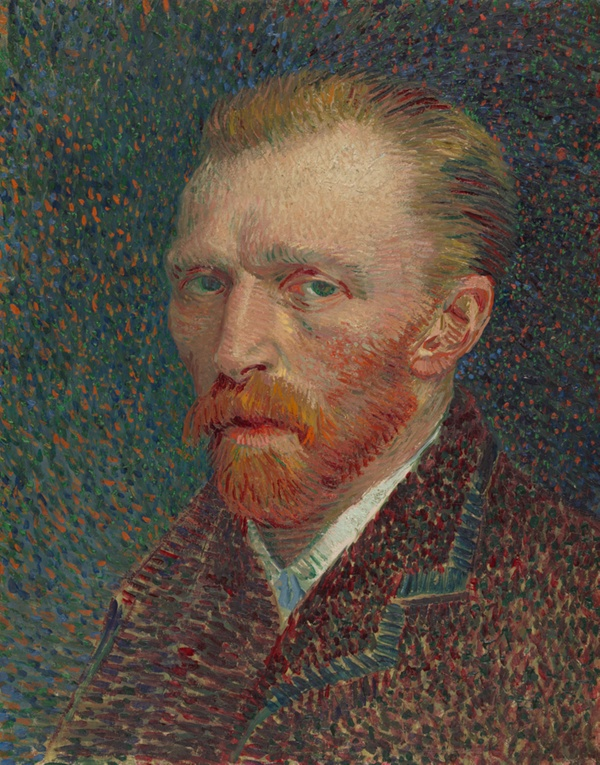
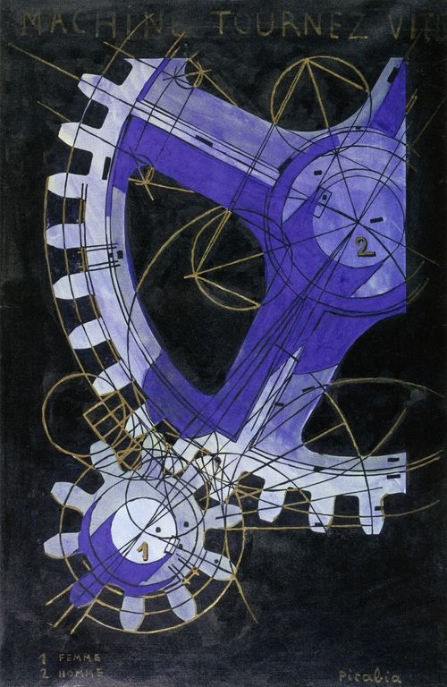
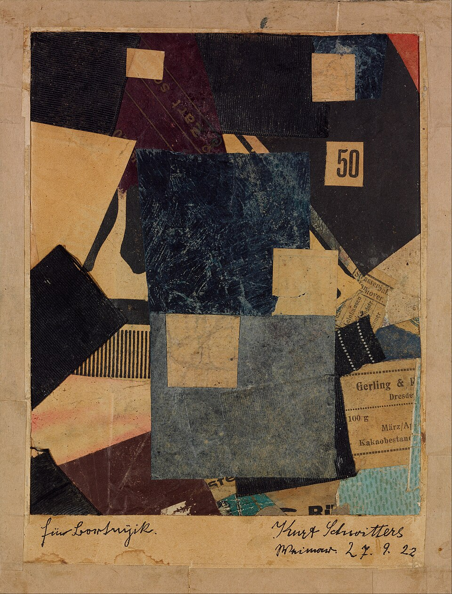

PAPER 09 / LATEST DISTURBANCE
↘LOW
CURVATURE
CURVATURE
CrispEdit: Low-Curvature Projections for Scalable Non-Destructive LLM Editing
ICML, 2026
ACADEMIC WEBSITE DETECTED
This page contains research, cats, low-curvature projections, and one button that has no intention of cooperating.
Your first click may wake the tiny synthesizer. It can be muted at any time.A MOSTLY TRUE INDEX OF
জারিফ ইকরাম
RESEARCHER / TENOR / ACCIDENTAL WEB OBJECT


Warning: a world model has encountered the real world.
DOSSIER 00½
I am a 1st year Annenberg PhD fellow at USC, advised by Paria Rashidinejad. I hold a B.Sc. from CSE, BUET (Class of '25).
I am a research intern at Microsoft Research AI Frontiers, NYC under John Langford and Tim Pearce.
Previously, I studied world models under Dianbo Liu at NUS and behavior modeling under Jim Whitehead at UCSC.
A tenor with the USC Thornton Concert Choir under Tram Sparks, my musical background is in Indian classical music under Asit Dey. I trained at Chhayanaut Music School and also play harmonium, guitar, and piano.
MISSION STATEMENT / MISPRINT 02
Unfortunately, this page has neither a model nor evidence of improvement.
EVIDENCE LOCKER 01—09
ICML, 2026

Transactions on Machine Learning Research, 2025
ICLR GEM Bio workshop
★ BEST POSTER @ EEML 2024

Preprint, 2025

7th Robot Learning Workshop, ICLR, 2025

Transactions on Machine Learning Research, 2024
★ RISE 2024 RESEARCH GRANT AWARDEE

NeurIPS RealML Workshop, 2023

IEEE ITSC, 2023

DEPARTMENT OF PREVENTABLE OBSTACLES
The committee is eager not to receive your application.
Please reach the bottom to confirm that no bottom exists.
SIGNALS INTERCEPTED / SELECTED TALKS
TALK № 0002
ICLR World Models Workshop Oral, 2025
TALK № 0001
Beijing Institute of Technology, 2024
BUREAU OF ACADEMIC SERVICES
EXPERIMENT № 𝄞 / MACHINE-LISTENING FAILURE


CLICK THE HEAD / DRAG THE EVIDENCE / DISTRUST THE TEMPO
SIDE B / THE MODEL BEGINS TO SING
Hover over the vacancy. It has been rehearsing.
▪